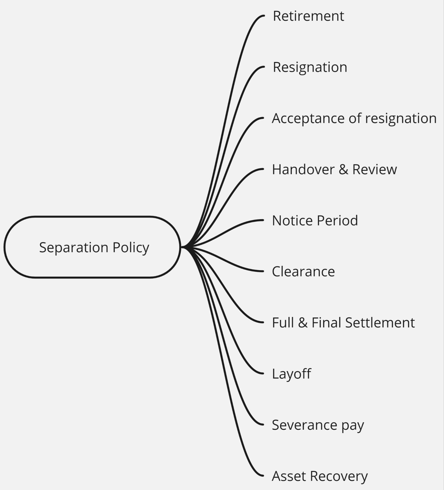
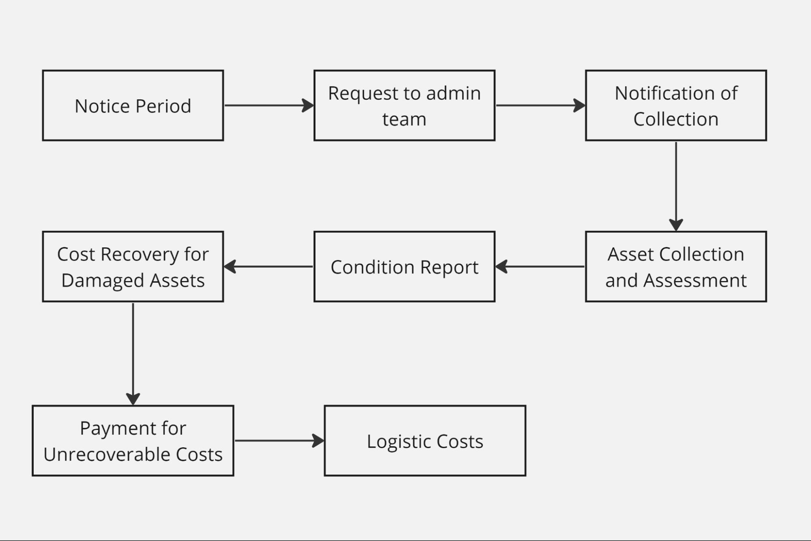

Separation Policy

The normal retirement age is 58 - 60 years. As per the requirements, the retirement age of any employee can be extended and the same needs to be accepted by the employee.
If an employee wishes to terminate their employment with IOT Monks Private Limited for any reason, it is mandatory for them to submit a resignation letter. The resignation letter should be submitted in accordance with the notice period specified in their appointment/employment letter. In the event that the notice period is not mentioned in the appointment/employment letter, the employee should provide a 90 days of notice period.
Acceptance of resignation:
The acceptance of an employee's resignation is subject to the discretion of the Group head. Prior to the acceptance, the HR department will conduct a meeting with the resigning employee. It is important to note that no oral commitments will be made to employees who have submitted their resignation. Along with the letter of resignation, a note from the Reporting Manager must accompany, providing detailed reasons for the resignation and specifying the anticipated date of relieving from the current position. The final decision regarding the acceptance of the resignation rests with the Group Head.
Handover & Review
Resignations are accepted after carefully considering the replacement plans for the vacant position and ensuring an effective handover process. Employees must submit their resignation letter to their reporting manager, and a copy of the letter should also be forwarded to the Human Resources Department. The separation process will be initiated only after obtaining the concurrence of the Group head concerned in the resignation letter. It is important to note that once an employee resigns, they will no longer be included in any ongoing reviews or evaluations.
Notice Period
All employees at IOT Monks Private Limited are obligated to provide a working notice period, which supersedes any conflicting terms in the employment agreement. During the notice period, employees are not eligible to take or be granted leave. The notice period commences from the day the written resignation is accepted by the immediate Reporting Manager or Group Head. Therefore, it is essential for the group head to promptly inform the HR department upon receiving the initial intimation of resignation. If an employee takes leave during the notice period, they are required to compensate for the leave taken by extending their working period beyond the original notice period, equivalent to the number of leave days taken.
The decision regarding the notice period is subject to the discretion of the parties involved. No comparisons or precedents will be considered or entertained. If an employee fails to fulfill the required working notice period, the company will view it as a serious matter and reserves the right to pursue legal action if necessary.
Clearance
Upon receipt of an employee's resignation, the Reporting Manager is responsible for sending a formal resignation acceptance/acknowledgment to the employee. Along with this, the Reporting Manager should provide the employee with the necessary No Dues Certificate (NDC) to obtain clearance from relevant departments. This communication can be done through email or any other appropriate means. It is the employee's responsibility to obtain the required clearances from all relevant departments. To initiate the clearance process, the employee should commence the procedure on their last working day at IOT Monks Private Limited and submit the necessary documents to the HR department for the completion of relieving procedures.
In the event that you have been assigned any company assets, such as a mobile phone, laptop, corporate credit card, identity cards, SIM cards, data cards, or any other similar items, it is essential that you return them to the company in perfect condition. Only after the return of these assets, accompanied by a duly filled "No Due Certificate," will the full and final settlement process be initiated.
Full & Final Settlement
The full and final settlements will be completed within 45 working days from the employee's departure date. However, this process will commence only when the employee submits the no due form to the HR department. In the full and final settlements, any outstanding dues owed by the employee to the employer, including advances taken, notice period compensation amounts, and training fees incurred within the last 6 months prior to leaving, will be deducted. Additionally, any amount payable or receivable to/from the employee will be settled prior to processing the full and final payment.
Layoff:
Layoff represents an involuntary employment termination initiated by the organization due to significant changes, aiming to adapt to new circumstances or improve efficiency. Layoffs may involve severance packages, notice periods, and sometimes reemployment assistance, depending on company policies and local regulations.
Severance pay:
Severance pay is compensation provided by employers to employees upon termination. It's not mandatory by law but is often part of employment contracts. The purpose is to ease financial transition, and packages may include a lump sum, continued benefits, or job placement assistance. Eligibility varies, and taxation depends on Indian law. Compliance with labor regulations is crucial for employers. It will be decided by the management.
Asset recovery

Asset recovery policy and process aims to ensure the smooth and organized return of company assets when an employee leaves the organization. It also emphasizes the importance of maintaining the assets in good condition, as any damages incurred may result in a financial responsibility for the departing employee.
- Employees should hand over all the assets physically given by IOT Monks Private Limited for executing their work. For example: calculator, cell phones, laptops, modems, etc.
- Notice Period Completion: When an employee completes their notice period and is ready to depart from the company, they must initiate the asset handover process.
- Request to Admin Team: The departing employee is responsible for raising a formal request to the company's administrative team. This request should include their updated address and phone number for future communication.
- Notification of Collection: Once the request is received, the employee will be notified with the scheduled date and time for the collection of company assets. It's essential that the individual is available during this specified time to hand over the assets.
- Asset Collection and Assessment: On the designated date, the logistic team will arrive to collect the company assets. They will carefully inspect the assets to assess their current condition.
- Condition Report: A detailed report on the condition of each asset will be prepared by the administrative team. If the assets are found to be in good condition, there is no further action required.
- Cost Recovery for Damaged Assets: In cases where the assets are damaged or not in the expected condition, the cost of repair or replacement will be determined. The equivalent cost will be deducted from the employee's settlement.
- Payment for Unrecoverable Costs: If the cost of repair or replacement cannot be fully recovered from the employee's settlement, the departing employee will be responsible for covering the outstanding amount to finalize the settlement process.
- Logistic Costs: The logistic costs Employed with the return of company assets are the responsibility of the employee, and these costs will be deducted from final settlement.
- An employee will be terminated in the event of being guilty of misconduct or negligence in the discharge of employee duties or in the conduct of the company’s business.
- Any violations which are likely to affect the reputation of the company’s working as in case breach of the terms and conditions herein the company reserves its right to terminate with immediate effect and no due certificate should be obtained from the supervisor and the same should be submitted to HR for Full & Final settlement.
- When an employee is absent from work for three consecutive workdays and fails to contact his or her reporting manager will be considered as job abandonment and they will be terminated without notice, explanation, and payment.
- He or she will be terminated if they commit a breach of contract of employment.
- They may also be terminated if they violate any rule or disobey any lawful instruction given by the company.
- If any declaration given or furnished by them to the company in any document submitted for employment proves to be false or if you have wilfully suppressed any material information.
- Now withstanding the above, the company reserves the right at all times to terminate your employment forthwith without notice or payment in lieu of notice by way of punishment for misconduct under the company’s service rules.
- In such an event, without prejudice to the company’s rights at law and / or under other provisions of this letter, the company shall pay only salary earned by you up to the date of termination.
- Company has authorization to deduct from any payment due to employees at any time, including from a termination or severance payment, any amounts owed by them to the company unless otherwise prohibited by law.
- The company shall be entitled to offset payment of any pro-rated allowance advances, etc. against salary due and to withhold amounts that may be required by the relevant authorities.
- Upon termination of employment, He or she will immediately hand over to the company all correspondence, specifications, formulae, books, documents, market data, cost data, drawings, affects or records belonging to the company, passwords or relating to its business and shall not retain or make copies of these items.
- Upon termination of employment, you will also return all company property, which may be in your possession.
- Upon termination of employment, the training expenses incurred within the last six months will be deducted from the final settlement (F&F).